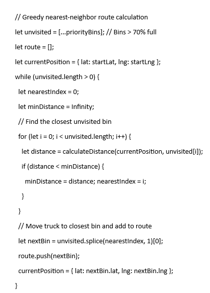

Smart Waste Collection Route Optimizer
An intelligent waste-management prototype that combines smart-bin monitoring concepts, geographic mapping and route optimization to identify priority bins and generate more efficient collection paths.
The problem
Traditional waste collection can use fixed routes even when bins are not full. This can create unnecessary trips, longer travel distances, higher fuel usage and delayed collection at high-demand locations. The project explores a data-driven alternative based on bin priority and route optimization.
How the prototype works
1. Monitor bin status
Prototype bins have simulated capacity states representing smart-bin fill levels and collection priority.
2. Identify priority bins
The routing logic filters bins that require service, including bins above the documented 70% capacity threshold.
3. Calculate the route
An initial greedy Nearest-Neighbor approach uses Haversine geographic distance to choose the next closest priority bin.
4. Visualize collection
A dashboard displays bin status, fleet information and the generated route on a geographic map.
Implementation
Frontend
Basic React/Vite dashboard structure with live-style statistics for total bins and fleet tracking.
Mapping
react-leaflet is used to render a city map with 15 prototype priority-bin markers and capacity states.
Backend API
Node.js/Express REST endpoints support bin data, simulation and collection actions.
Persistence
SQLite stores and updates simulated capacity states for the prototype bins.
Prototype dashboard
The project dashboard visualizes bin capacity and the collection route, giving a clear view of which locations need attention.

Routing logic
The documented prototype uses a greedy nearest-neighbor strategy: starting from the current truck position, it calculates geographic distance to unvisited priority bins, selects the closest one, adds it to the route and repeats until the priority set is covered.

Project status
The current documentation records the prototype at approximately 25% implementation, focused on the frontend dashboard and routing algorithm. Future phases include more complete testing and validation and a final project report.